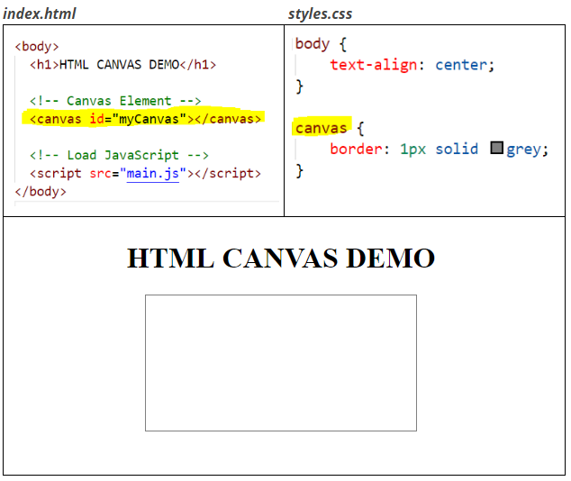
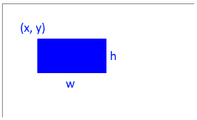
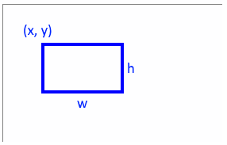
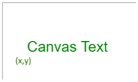
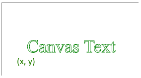
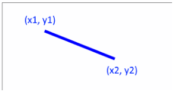
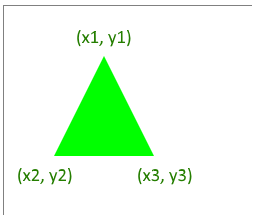
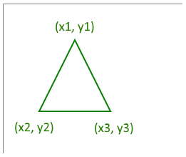
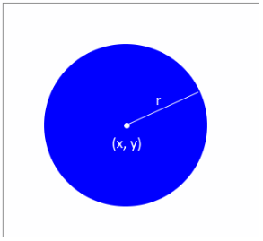
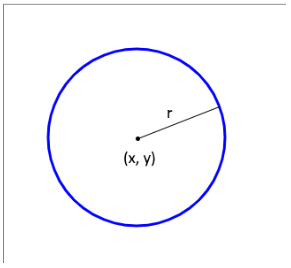

Drawing Basics
Video LessonLearn the basics of drawing shapes and text on an html <canvas>.
<canvas> | canvas coordinate system | graphics context | basic shapes & text
HTML <canvas> Element
An HTML <canvas> element may be added to your web page.
The <canvas> element may be styled with css like any other element.

Canvas Coordinate System
The canvas uses a coordinate system to specify the location of items to draw.
The origin is the top-left corner of the canvas.
The x-axis increases as you go right from the origin.
The y-axis increases as you go down from the origin.

Canvas & Context
A reference to the html <canvas> element may be used to generate a graphics
context and to specify the width
and height of the canvas.
let cnv = document.getElementById("myCanvas");
let ctx = cnv.getContext("2d");
cnv.width = 600;
cnv.height = 400;
The graphics context (ctx) is what is used to control what is drawn on the canvas.
Drawing Properties
The graphics context has various properties that may control things such as the line thickness or color of what is drawn.
Color properties may use any valid CSS colors.
// Set the fill color
ctx.fillStyle = "green";
// Set the line color
ctx.strokeStyle = "rgb(255, 0, 0)";
// Set the line thickness
ctx.lineWidth = 4;
Filled Rectangle
ctx.fillRect(x, y, w, h);
- (x, y) = top left corner
- w = width
- h = height
Example
// Draw a filled rectangle
ctx.fillStyle = "blue";
ctx.fillRect(50, 50, 100, 60);

Outlined Rectangle
ctx.strokeRect(x, y, w, h);
- (x, y) = top left corner
- w = width
- h = height
Example
// Draw an outlined rectangle
ctx.strokeStyle = "blue";
ctx.lineWidth = 4;
ctx.strokeRect(50, 50, 100, 60);

Filled Text
ctx.fillText(text, x, y);
- text = message to display
- (x, y) = bottom left corner
Example
// Draw filled text
ctx.font = "30px Arial";
ctx.fillStyle = "green";
ctx.fillText("Canvas Text", 50, 100);

Outlined Text
ctx.strokeText(text, x, y);
- text = message to display
- (x, y) = bottom left corner
Example
// Draw outlined text
ctx.font = "36px Times";
ctx.lineWidth = 1;
ctx.strokeStyle = "green";
ctx.strokeText("Canvas Text", 50, 100);

Line
Example
// Draw a line
ctx.lineWidth = 5;
ctx.strokeStyle = "rgb(0, 0, 255)";
ctx.beginPath();
ctx.moveTo(75, 50); // Start at (x1, y1)
ctx.lineTo(200, 100); // Go to (x2, y2)
ctx.stroke(); // Draw path

Filled Triangle
Example
// Draw a filled triangle
ctx.fillStyle = "#00FF00";
ctx.beginPath();
ctx.moveTo(100, 50); // Start at (x1, y1)
ctx.lineTo(50, 150); // Go to (x2, y2)
ctx.lineTo(150, 150); // Go to (x3, y3)
ctx.fill(); // Fill shape

Outlined Triangle
Example
// Draw an outlined triangle
ctx.lineWidth = 2;
ctx.strokeStyle = "green";
ctx.beginPath();
ctx.moveTo(100, 50); // Start at (x1, y1)
ctx.lineTo(50, 150); // Go to (x2, y2)
ctx.lineTo(150, 150); // Go to (x3, y3)
ctx.closePath(); // Go back to start
ctx.stroke(); // Draw path

To draw any n-sided polygon simply add more ctx.lineTo() commands.
Filled Circle
ctx.arc(x, y, r, start, end);
- (x, y) = center
- r = radius
- start = start angle in radians
- end = end angle in radians
Example
// Draw a filled circle
ctx.fillStyle = "blue";
ctx.beginPath();
ctx.arc(150, 150, 100, 0, 2 * Math.PI);
ctx.fill();

Outlined Circle
Example
// Draw an outlined circle
ctx.lineWidth = 3;
ctx.strokeStyle = "blue";
ctx.beginPath();
ctx.arc(150, 150, 100, 0, 2 * Math.PI);
ctx.stroke();

Summary
- HTML has a
<canvas>element that can be used for drawing. - The canvas' graphics context may be used to draw various shapes and text to the canvas.
Check Your Understanding
Try to do the following task(s) to check your understanding. Ask for help if needed.
- Use a canvas to draw the image below:
Attention
- be sure to use an event listener to give the user time to type something into the input element!
- the value of the input element is always a String data type. Convert to a Number data type if required.